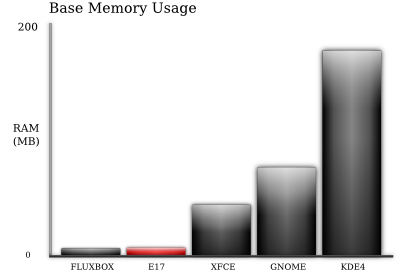
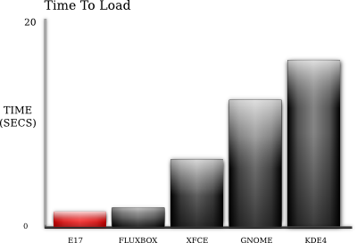

Tests and Benchmarks
There are many developers working on improving EFL as a commercial set of libraries. To ensure that EFL is a leader in performance, a number of benchmarks are conducted to ensure each version is as fast or faster than the last.
Memory & Start Time
A series of tests were performed to attain who is the the leader in base memory usage and boot time. The tests were conducted on an Ubuntu 9.10 64-bit system, with GDM set to auto-login, xsplash disabled and all environments customised to a user acceptable comfort level. This was a very important point, as a lot of tests are conducted with default installs which in some instances are quite tedious to use.
Click the charts for more detailed results.
 
As evidenced, E17 is on the same level of memory usage and start time as the ultra slim fluxbox window manager. While fluxbox has a minor advantage over E17 in base memory usage, it is no where near as functional or visually appealing as E17.
EET vs SQLite
While making a photo manager, Watchwolf needed a backend to sort the photos into a library. The application must load a list of albums and photos from a database, and also syncronize the database with new photos and deleted albums and photos. As a test, he went on to write a small application that directly compares SQLite (a minimalist SQL implimentation) to Eet (a tiny database library).
The tests consist of creating a database from 1231 albums and 27657 photos. Syncs is the time taken to create the database, Loading is the time taken to load all the data to memory and ReSyncs is the time taken to compare the database to the harddrive contents.
Test Results |
|||
|---|---|---|---|
| Backend | Syncs | Loading | Re-Syncs |
| SQLite | 13.55 secs | 7.57 secs | 10.67 secs |
| Eet | 3.38 secs | 0.91 secs | 2.53 secs |